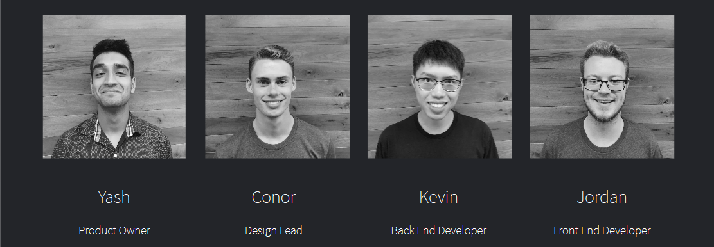
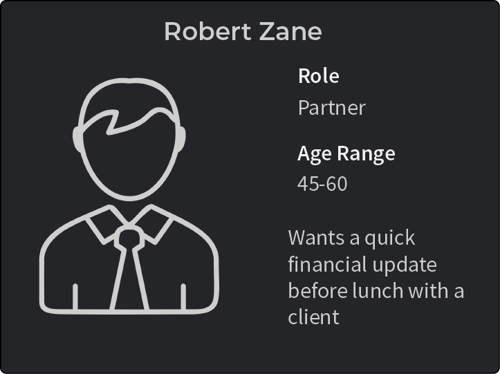
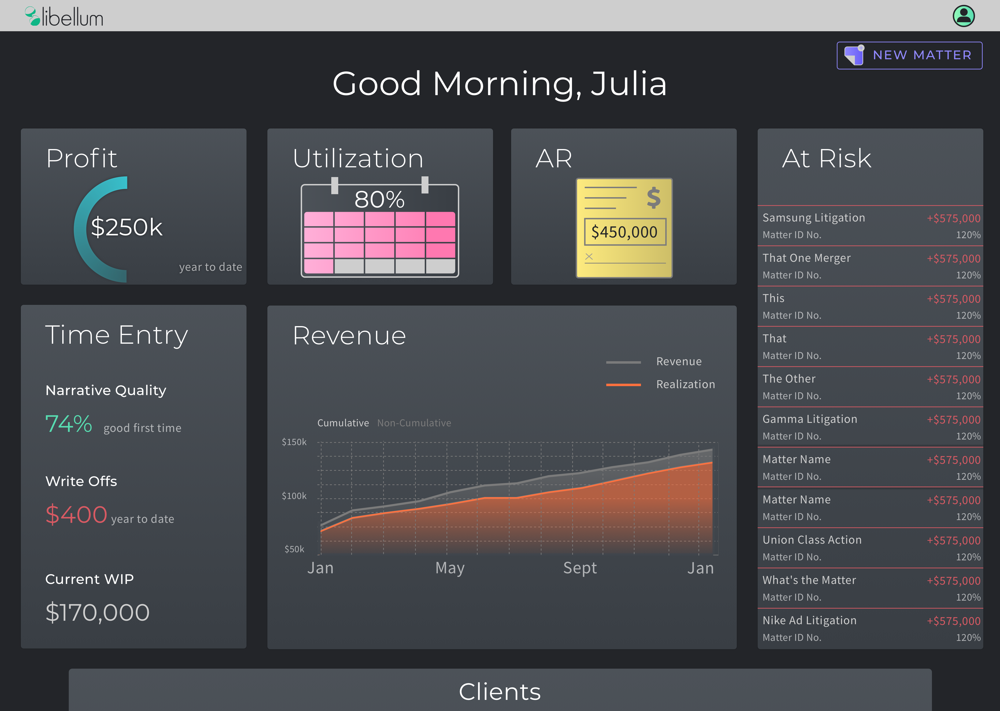

Our team of four associates was given the opportunity to uncover a problem within the legal industry and create a solution over 13 weeks. We chose to develop a solution geared towards those who manage financials at lawfirms. This includes partners, who manage relations with particular clients, as well as matter management attorneys, who oversee both the legal work and financials for particular matters.
As the lone designer on this team, I was responsible for all UX and UI (excluding logo design).
I crafted user personas based on data on law firm partners and information given to my team by the legal billing team at Fulcrum, and a little help from my favorite legal television show, Suits. This allowed me to craft a more personal user experience for our clients.
One user persona used crafted for Libellum.
We were able to identify the following pain points in the everyday work of attorneys:
It is difficult to tell whether matters are running over budget - let alone the amount by which they are running over - until bills are being sent out. This often leads to firms not being paid for all of the work that is being done on matters.
Law firms do not have an accurate idea as to how much money they will bring in for the matters on which they are working.
Client often want to know how much money they currently owe to their attorneys. This information is spread across multiple systems and only stored at the matter level, so compiling an accurate number is a tedious, manual process.
A journey map for how lawyers currently deal with client's requests.
The solution I envisioned for the struggles these attorneys face is a predictive analytics dashboard for lawyers. Most legal financial platforms rely entirely on past and current data. Our team took things a step further, showing lawyers not just what problems exist already, but what issues might arise soon if no changes are made. Libellum also provides actionable insights - written in prose - to help partners figure out how to fix their problems.
In our research we found a handful of other products attempting to solve this same problem. Every competitor, however, packed screens with as many data points as they could. I opted for a less crowded dashboard, where lawyers would only be shown the most important information and insights for how the information provided can be used. A list of matters that need attention is also available and will save attorneys time trying to shift through all of their clients.
Time entry information is present because lawyers with whom we met cited poor quality of time entry descriptions as a major reason why bills get paid late or do not get paid at all. Putting this on the home screen is a constant reminder to lawyers that will hopefully help to create better habits when it comes to writing time entries.
The Libellum dashboard
At a client level we identified the most important feature to be the value of the work done to date by the firm. Relating back to the user persona above, Robert needs to be able to discuss the financial standing with clients when they meet. Additionally, clients often want to know about a small subset of matters. This was the inspiration behind a filter function, allowing the information on the client page to be displayed for any combination of matters, saving the time of looking through each matter individually.
The client screen for Libellum, with the filter open on the right. Example insights can be seen on this page.
At the matter level, I wanted to show more specific information with actionable takeaways. Lawyers can see their upcoming bill as well as Libellum's estimates of the total cost and duration of their matters. This means attorneys can talk to their clients about these issues before they arise.
The view for individual matters.
I used the same colors to represent the same data throughout Libellum. On all of the graphs seen - whether it be at the partner level, or drilled down to a client or matter - the color blue represents profit, orange represents realization, etc. This was done so that once attorneys have become familiar with the site, there will be no need to check legends repeatedly to determine what each line or pie slice represents.
I opted for a dark look for our screens because of the lack of text. Since the majority of Libellum's information is displayed as visualizations, a dark background did not feel like it took away too much contrast. Lawyers spend much of their time on their devices, so a dark look will reduce eye strain throughout their day. Lastly, each of our competitors - and nearly every legal software product - uses a light background, so this served as a point of differentiation for Libellum.
I really enjoyed taking a deep dive into the legal field and seeing how a software product could be designed to improve the day-to-day operations of attorneys.
Due to time constraints and a small team, our prototype does not perfectly align with the mockups displayed. Jordan and Kevin did a phenomenal job getting us close, however, and I am excited to hear how Fulcrum ends up using this product in the future.